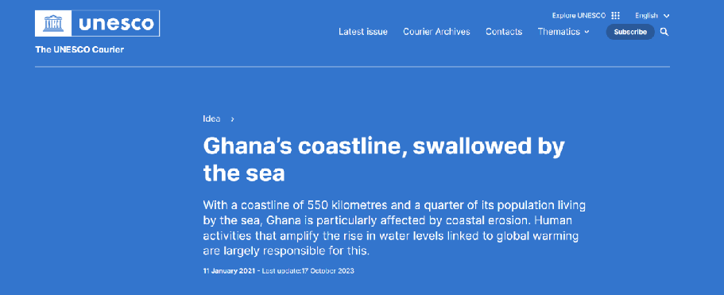
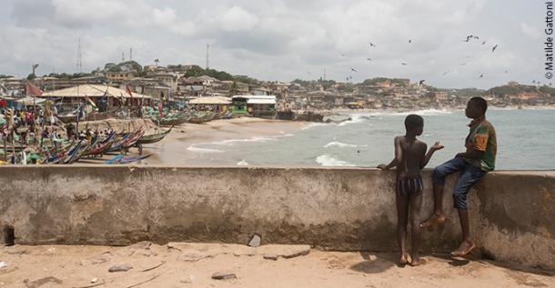
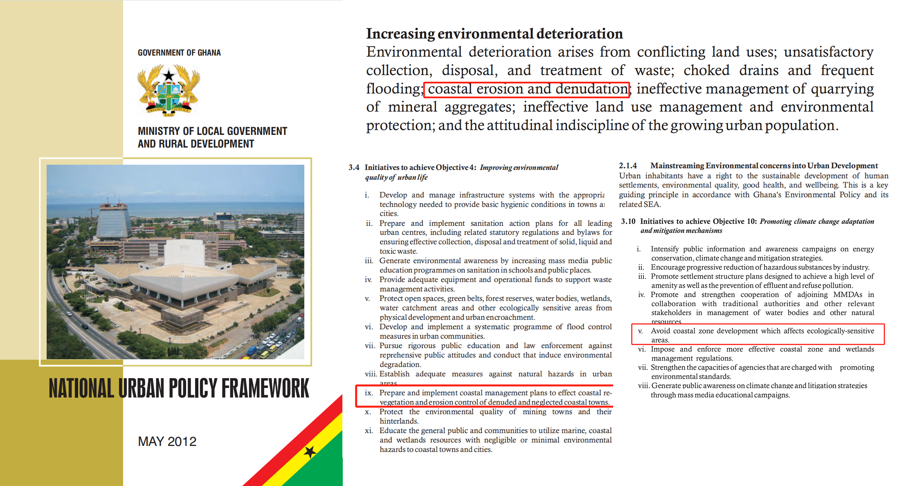
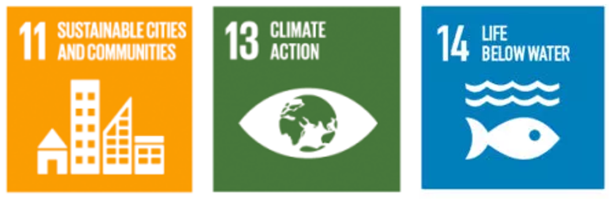
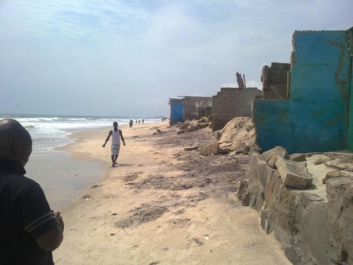
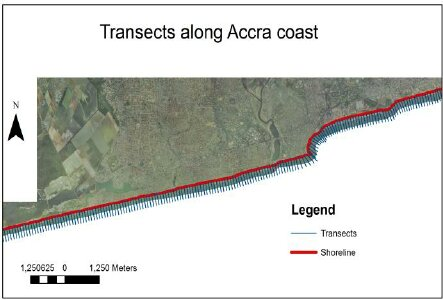

4 Policy: Coastal Erosion Management in Ghana
4.1 Summary
4.1.1 Background of Coastal Retreat

Ghana’s coastline, swallowed by the sea Source: The UNESCO Courier
Ghana’s coastline stretches over 550 kilometers and is crucial to the country’s socio-economic fabric, with significant activities like fishing, tourism, and industry. However, this coastal region faces severe erosion, with land receding at alarming rates due to natural processes exacerbated by human activities. Factors contributing to the erosion include rising sea levels linked to global warming, unchecked industrial activities, and infrastructure development. This has led to the loss of land, negatively impacting livelihoods, cultural heritage, and biodiversity.
Video: Erosion wearing down Ghana’s coast
4.1.2 Local Government Policy Overview

In response to these challenges, the Ghanaian government has developed and implemented policies aimed at mitigating coastal erosion. Ghana’s National Environmental Policy now mentions marine and coastal degradation as one of the country’s environmental challenges.The “Coastal Management Plan” focuses on constructing seawalls at critical points along the coast to protect against erosion. Moreover, the “National Urban Policy Framework - Ghana” discusses broader urban challenges, including coastal erosion, and emphasizes the socio-economic impacts and the importance of an integrated approach to urban management.
Policy Initiatives for Achieving Objective 4: Improve the Quality of the Urban Environment
...
Formulate and implement coastal management plans to achieve coastal revegetation and erosion control in degraded and neglected coastal towns.
Policy Initiatives for Achieving Objective 5: Ensure Effective Planning and Management of Urban Growth and Expansion
...
Strengthen the use of remote sensing (such as aerial photographs and satellite images) and Geographic Information Systems (GIS) to enhance urban development and management.
These initiatives underscore the government’s dedication to tackling coastal erosion by combining infrastructural interventions with sustainable management approaches.
4.1.3 Alignment with United Nations SDGs

Ghana’s efforts to manage coastal erosion resonate with several United Nations Sustainable Development Goals (SDGs). Specifically, these efforts align with Goal 11 (Sustainable Cities and Communities) by enhancing urban sustainability and living conditions, Goal 13 (Climate Action) by addressing a significant effect of climate change, and Goal 14 (Life Below Water) by protecting marine ecosystems and biodiversity. These alignments underscore the multifaceted benefits of Ghana’s coastal management policies, extending beyond erosion mitigation to broader environmental and socio-economic improvements.
4.2 Applications
4.2.1 Accra as a Case Study in Coastal Erosion

Coastal erosion along portion of western Accra coast Source: Appeaning Addo et al. (2013)

Orthogonal transects for rates of change estimations Source: Appeaning Addo et al. (2008)
Next, Accra was specifically chosen as a case study to explore regional dynamics. The Accra region confronts severe coastal erosion, with substantial land loss affecting livelihoods and infrastructure. From 2005 to 2017, about 37% of the coastal land succumbed to erosion and flooding. Combining local insights with scientific research has been pivotal in tackling this challenge, revealing an erosion rate of -0.91 m/year.
While the Ghanaian government has implemented seawall constructions as a countermeasure, researchers stress the importance of adopting a more comprehensive approach beyond solely relying on structural defenses.
4.2.2 Leveraging Remote Sensing for Coastal Management
The application of remotely sensed data can play a crucial role in supporting the policy goals set by the Ghanaian government for coastal erosion management. High-resolution optical satellite imagery (e.g., Sentinel-2, Landsat 8, Gaofen-1), Synthetic Aperture Radar (SAR) data (e.g., Sentinel-1), and Digital Elevation Models (DEMs) such as ASTER GDEM and SRTM, offer valuable tools for monitoring, planning, and managing coastal erosion efforts effectively.
· Monitoring and Assessment: By regularly comparing high-resolution satellite images, authorities can identify the most severely eroded areas and the rate of erosion. SAR data, capable of penetrating cloud cover, is invaluable for assessing the coastline’s status during and after storm events, providing crucial information for emergency response and recovery efforts (Dellepiane, De Laurentiis & Giordano 2004).
· Planning and Implementation: DEMs offer a three-dimensional representation of the surface, aiding in understanding the erosion process and its impact on coastal landscapes. This information can be used to strategically plan the location and design of seawalls and other protective measures, ensuring they are both effective and environmentally sustainable (Evadzi, Zorita, & Hünicke 2017).
· Public Engagement and Awareness: Visualizations created from remotely sensed data can enhance public awareness about coastal erosion. By making this information accessible, the government can foster community participation in coastal protection efforts, aligning with the policy’s emphasis on community involvement.
Using remote sensing technologies, Ghana can improve coastal resilience, make better decisions, respond faster, and adopt a proactive coastal management strategy. This also includes evaluating the success of seawall constructions, ensuring the effectiveness of coastal protection efforts.
4.3 Reflection
Reflecting on my background as a landscape architecture student, my approach to addressing coastal erosion has traditionally focused on designing landscape features and interventions on a smaller scale to mitigate erosion and enhance the living environment for communities. This perspective emphasized the physical design and creation of spaces that directly interact with the coastal dynamics, such as dunes restoration, vegetation buffers, and community parks that double as protective barriers.
Now, having learned about the capabilities of remote sensing, I see a broader scope of possibilities for contributing to coastal erosion management. Remote sensing allows for a macro-scale understanding of coastal dynamics, providing data that can inform not only the design of individual landscape projects but also larger, strategic planning efforts. It offers a way to monitor the effectiveness of landscape interventions over time and adapt strategies based on real-world feedback. This integration of technology and design can lead to more resilient and sustainable coastal landscapes.
As a landscape architecture student, the shift from a micro to a macro perspective, enabled by remote sensing, represents a significant expansion of the tools available to me. It opens up new avenues for collaboration with scientists, policymakers, and communities in the fight against coastal erosion. By combining design principles with cutting-edge technology, I can contribute to creating more effective, adaptive, and holistic solutions that address the root causes of coastal erosion while enhancing the quality of life for affected populations. This learning journey underscores the importance of interdisciplinary approaches in tackling complex environmental challenges.
4.4 References
Appeaning Addo, K., Walkden, M. & Mills, J.P. (2008). Detection, measurement and prediction of shoreline recession in Accra, Ghana. Journal of Photogrammetry and Remote Sensing, 63, pp.543–558.
Appeaning Addo, K. (2013). Assessing Coastal Vulnerability Index to Climate Change: the Case of Accra – Ghana. In: Proceedings of the 12th International Coastal Symposium, Plymouth, England, Journal of Coastal Research, Special Issue No. 65, pp.1892-1897.
Appeaning Addo, K. & Appeaning Addo, I. (2016). Coastal erosion management in Accra: Combining local knowledge and empirical research. Jàmbá: Journal of Disaster Risk Studies, 8(1), p.274. Available at: https://jamba.org.za/index.php/jamba/article/view/274 [Accessed 31 Jan. 2024].
Dellepiane, S., De Laurentiis, R. & Giordano, F. (2004). Coastline extraction from SAR images and a method for the evaluation of the coastline precision. Pattern Recognition Letters, 25(13), 1461-1470.
Evadzi, P.I.K., Zorita, E. & Hünicke, B. (2017). Quantifying and predicting the contribution of sea-level rise to shoreline change in Ghana: Information for coastal adaptation strategies. Journal of Coastal Research, 33(6), pp.1283–1291.
“Ghana’s coastline, swallowed by the sea,” (2021). UNESCO Courier. [online] Available at: https://courier.unesco.org/en/articles/ghanas-coastline-swallowed-sea [Accessed 31 Jan. 2024].
Government of Ghana Ministry of Local Government and Rural Development. (2012). National Urban Policy Framework. Available at: https://nupdb.urbanpolicyplatform.org/listings/Ghana [Accessed 31 Jan. 2024].
Ministry of Works and Housing. (2019). 2019 Meet-the-Press Highlights. [pdf] Available at: https://www.mwh.gov.gh/wp-content/uploads/2019/05/MEET-THE-PRESS-high-light-web-1.pdf [Accessed 31 Jan. 2024].
United Nations Development Programme. (n.d). Sustainable Development Goals. [online] Available at: https://www.undp.org/sustainable-development-goals [Accessed 31 Jan. 2024].
Ayisi, E. (2022). As rising seas destroy Ghana’s coastal communities, researchers warn against a seawall-only solution. Mongabay. Available at: https://news.mongabay.com/2022/03/as-rising-seas-destroy-ghanas-coastal-communities-researchers-warn-against-a-seawall-only-solution/ [Accessed 31 Jan. 2024].
Modern Ghana. (n.d). Rising Sea Levels: How coastal dwellers in Accra are coping. [online] Available at: https://www.modernghana.com/news/1103977/rising-sea-levels-how-coastal-dwellers-in-accra.html [Accessed 31 Jan. 2024].